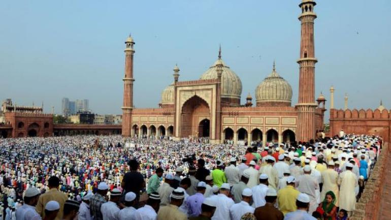
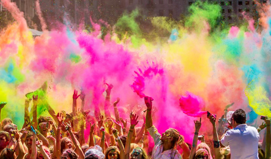
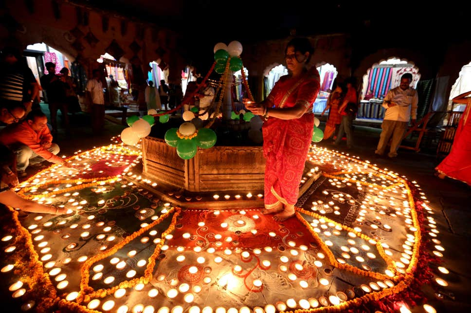
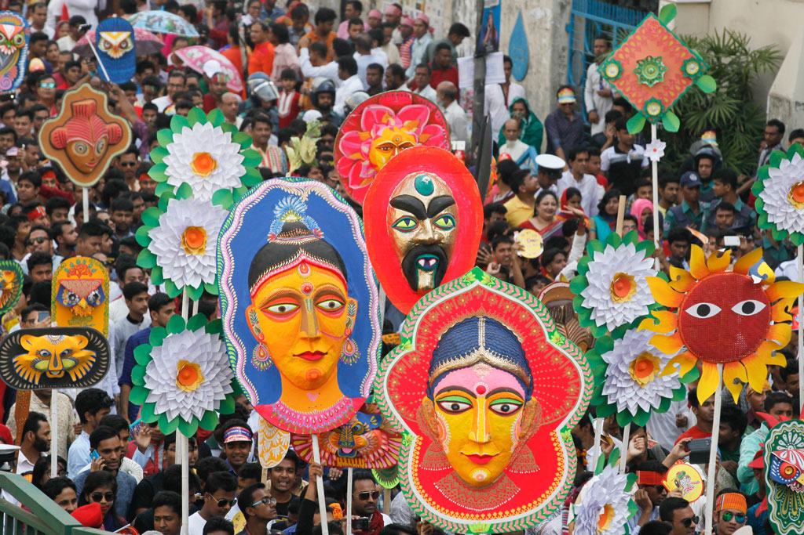
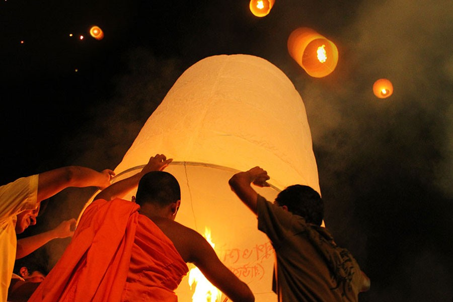
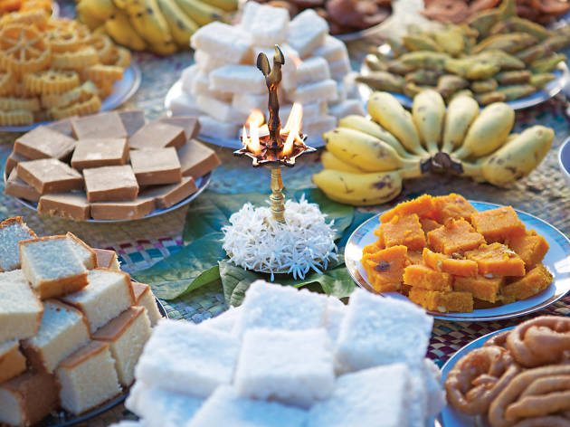

23 to 24 May (dates may vary)
The two Eids, Eid al-Fitr and Eid al-Adha, commemorate the passing of Ramadan, and the willingness of Abraham to sacrifice his son Ishmael for God. There are national holidays and many festival events that take place to celebrate Eid.
Mid February

This is the spring festival in Lahore. People traditionally fly kites on the roofs of their buildings. In 2007, the festival was banned, primarily due to an increasing number of deaths and serious injuries.
21 March
Also called the festival of colors. On the day of Holi, people gather in open areas and apply dry and wet colors of multiple hues to each other, with some carrying water guns and colored water-filled balloons.
27 October
During this festival of lights, houses are decorated with clay lamps, candles, and Ashok leaves. People wear new clothes, participate in family prayers, burst crackers, and share sweets with friends, families, and neighbors.
14 April
In Bangladesh, ‘Pohela’ means first and ‘Boishakh’ is the first Bengali month. Pohela Boishakh is the day on which Bengali New Year is welcomed with a new day of new beginnings, hopes, and happiness.
8 April
Across Bangladesh, Buddha Purnima is the largest Buddhist festival celebrating the birth of Buddha. Buddha devotees celebrate the festival based on three most important events in the life of Lord Buddha- his arrival, enlightenment and ‘nirvana.’
13 to 14 April
Sinhala & Tamil New Year is especially celebrated to mark the end of the harvest season and spring. People get busy cleaning and decorating their homes, preparing traditional sweets, enjoying meals with the family and showing off their new clothes.